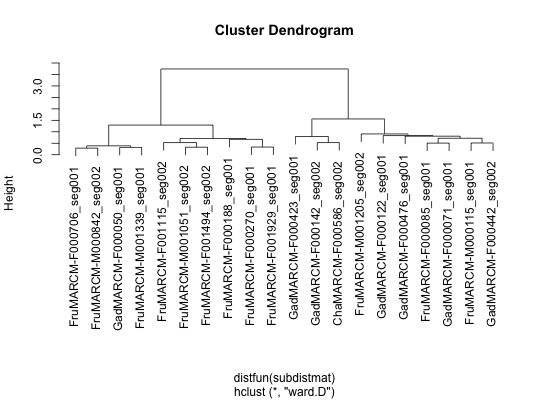
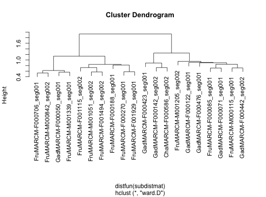
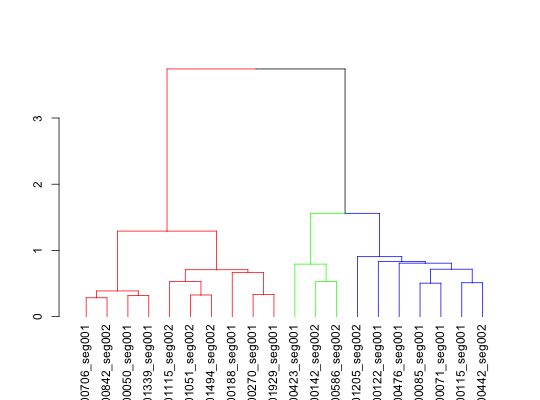

Given a vector of flycircuit gene/neuron names or neuronids use
hclust to carry out a hierarchical clustering. The default value of distfun
will handle square distance matrices and R dist objects. Note that hclustfc
is a thin wrapper around the nhclust function and that
is what you want to use if you have calculated a score matrix yourself e.g.
for a set of all by all pairwise neurons similarities computed by
nblast or nblast_allbyall.
hclustfc(gns, method = "ward", scoremat = getOption("flycircuit.scoremat"), unsquare = FALSE, distfun = as.dist, ..., maxneurons = 4000)
| gns | FlyCircuit identifiers (passed to fc_gene_name). |
|---|---|
| method | clustering method (default Ward's). |
| scoremat | score matrix to use (see |
| unsquare | Whether to return the square root of the distance calculated
by |
| distfun | function to convert distance matrix returned by
|
| ... | additional parameters passed to hclust. |
| maxneurons | set this to a sensible value to avoid loading huge (order N^2) distances directly into memory. |
when method is ward, ward.D or ward.D2 it may make sense to
unsquare the resultant distance before plotting.
fc_gene_name, nhclust,
hclust, dist, plot3d.hclust
data(kcs20, package='nat') hckcs=hclustfc(names(kcs20))#># plot basic dendrogram plot(hckcs)# plot dendrogram using unsquared distance plot(hclustfc(names(kcs20), unsquare=TRUE))#># divide hclust object into 3 groups library(dendroextras) plot(colour_clusters(hckcs, k=3))# 3d plot of neurons in those clusters (with matching colours) library(nat) plot3d(hckcs, k=3, db=kcs20) # names of neurons in 3 groups subset(hckcs, k=3)#> [1] "FruMARCM-F000706_seg001" "FruMARCM-M000842_seg002" #> [3] "GadMARCM-F000050_seg001" "FruMARCM-M001339_seg001" #> [5] "FruMARCM-F001115_seg002" "FruMARCM-M001051_seg002" #> [7] "FruMARCM-F001494_seg002" "FruMARCM-F000188_seg001" #> [9] "FruMARCM-F000270_seg001" "FruMARCM-F001929_seg001" #> [11] "GadMARCM-F000423_seg001" "GadMARCM-F000142_seg002" #> [13] "ChaMARCM-F000586_seg002" "FruMARCM-M001205_seg002" #> [15] "GadMARCM-F000122_seg001" "GadMARCM-F000476_seg001" #> [17] "FruMARCM-F000085_seg001" "GadMARCM-F000071_seg001" #> [19] "FruMARCM-M000115_seg001" "GadMARCM-F000442_seg002"